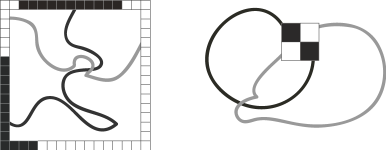
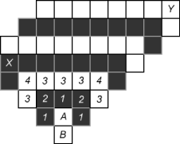
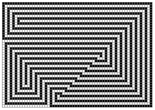

Plenty and void grow from each other;
hard and easy foster each other;
long and short shadow each other;
elegance and mudanity prosper together;
music and voice complement each other;
back and front stay together;
they last forever.
This version, translated by our colleague Yifan Shi, is certainly closer to the original meaning of the text.
One may discover a series of observations in attacking this problem. Some are obvious, while others need some hard work and inspiration. Our algorithm searches all the possible solutions and counts them. Imagine yourself to be a detective facing such an empty rectangular board. Your job is to reveal all the possible solutions, quickly.
For any solution, as the problem stated, almost all the points have degree (number of neighboring squares with the same color as itself) 2; and there are exactly 4 points having degree 1. Let us call the points with degree 1 end points;
Once we have decided all the degrees, we can try to reconstruct the
color of each square by brute force search. Suppose in a general case,
we have colored a square A, and we also colored all but only
one of its neighbor B, then we do not need to try both
black and white for B, it is decided by the color of the
other squares, and the degree of A.
This gives us a much faster way to recover all the solutions than searching
blindly. One can see that if all the colors of the first row are decided,
and we proceed from top down, then in each step we always have a square
(in fact close to M squares) who is in the same situation as
A above. So, once we decided the combination
(color of the first row, the position of the 4 end points),
all we have to do is to check in O(NM) time if a solution arises.
There are 2M ways to color the first row, and
Θ((NM)4) ways to pick the end points.
Both numbers are too big. One may easily see most of the 2M
colorings of the first row will obviously fail to give a solution,
as we will discuss in the next section. After that, we will work on
how to reduce the number of positions for the end points.
Rather than looking at the first row, let us consider the outer loop of the board. That is, the positions on the boundary. It is easy to see that they cannot be of the same color -- the outer loop must contain both black and white squares.
We can say much more about the outer loop. It must be exactly one segment of black squares, and the rest is exactly one segment of white squares! The reason can be seen from the picture on the left below. If there are at least two black segments (and hence at least two white segments), there is no way one can connected both the black pieces and white pieces from the inside of the board.

The second picture shows a forbidden configuration for a 2 by 2 square. If we have a chessboard-like situation, there is no way to connect both black squares and white squares.
Suppose A is a white end point, and B is its sole white neighbor, as in the picture below.

A has no other white neighbors, so the positions labeled with 1 must be black.2 must be black as well.3 must be white.4 must be white as well.X is a point on the boundary, and it is also the place where black and white squares meet on the boundary. Yet we can continue the deduction along the other direction, until we get a point Y on the boundary as well.
This gives a nice connection between the end points and the outer loop. From an end point, we draw two diagonal rays (both with 135 degrees to its neighbor with the same color), both rays hit the boundary either at a corner, or at a point where the black and white squares meet on the outer loop.
Let us summarize our algorithm. We start by fixing the outer loop as a segment of black squares and the rest white. Then from each corner we draw a diagonal line; also from each point on the outer loop that is next to a different color on the loop, we draw one diagonal line going away from the neighbor with the different color. Thus we have 8 diagonals. These diagonals will produce no more than 16 intersections. Those are all the possible positions for the end points.
There are O((N+M)2) ways to fix the outer loop, and thus O((N+M)2) ways to fix the outer loop and the end points. For each of these, one can check if a solution arises in O(MN) time. So the running time is O(MN(N+M)2). The constant is not very small, but tolerable. And one can reduce it using symmetry.
Below is one of a good solution. We may see how the end points and outer loop are connected by the diagonals.
